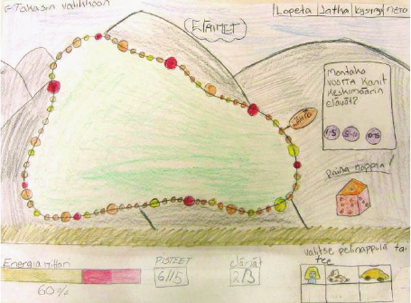

Hindawi Publishing Corporation
Advances in Human-Computer Interaction
Volume 2008, Article ID 284056, 7 pages
doi:10.1155/2008/284056
Research Article
Exploring Children’s Requirements for Game-Based
Learning Environments
Tuula Nousiainen
1
and Marja Kankaanranta
1, 2
1
Agora Center, University of Jyv
¨
askyl
¨
a, P.O. Box 35, 40014 Jyv
¨
askyl
¨
a, Finland
2
Institute for Educational Research, University of Jyv
¨
askyl
¨
a, P.O. Box 35, 40014 Jyv
¨
askyl
¨
a, Finland
Correspondence should be addressed to Tuula Nousiainen, tuula.nousiainen@jyu.fi
Received 8 October 2007; Revised 21 April 2008; Accepted 24 July 2008
Recommended by Adrian Cheok
End users’ expertise in the development of new applications is acknowledged in user-centered and participatory design. Similarly,
children’s experience of what they find enjoyable and how they learn is a valuable source of inspiration for the design of products
intended for them. In this paper, we explore experiences obtained from collaboration with elementary school children in the design
of lear ning environments, based on three projects and three requirements gathering techniques. We also discuss how the children
experienced the participation. The children’s contribution yielded useful, both expected and unanticipated, outcomes in regard to
the user interface and contents of the learning environments under development. Moreover, we present issues related to design
collaboration with children, especially in terms of the children’s feeling of ownership over the final outcome.
Copyright © 2008 T. Nousiainen and M. Kankaanranta. This is an open access article distributed under the Creative Commons
Attribution License, which permits unrestricted use, distribution, and reproduction in any medium, provided the original work is
properly cited.
1. Introduction
The potential of involving children as active contributors
in technology design is being increasingly acknowledged
(e.g., [1–3]). Children are no longer seen only as research
objects or as a passive target group for the development
of new technologies. Instead, similarly as the end users’
knowledge about, for example, their work practices is valued
in participatory design with adults (e.g., [4]), also children’s
expertise about the issues they are familiar with is considered
valuable. Several researchers (e.g., [5, 6]) have emphasized
the need to better understand children’s needs as technology
users as their ways of interacting with technology often differ
fundamentally from those of adults, for example, in terms
of curiosity and tendency to explore, and their preference
of working together. Moreover, children’s wishes especially
regarding the fun and motivating aspects may be difficult
for adult designers to envision [3, 6]. A recently emerged
perspective to designing applications for children is child-
computer interaction (CCI), which applies HCI principles
and participator y methods to this specific context (e.g., [6]).
Moreover, the design of educational software has broadened
the HCI perspective to bring in principles of pedagogical
design: an approach referred to as learner-centered design
(LCD) has been introduced as a way of bringing together
HCI on the one hand and educational and developmental
principles on the other [7, 8]. Additionally, it is worth
looking into areas such as child-centered pedagogy and
sociology for a multidisciplinary perspective on children’s
active citizenship and empowerment (e.g., [9, 10]).
Traditional user-centered design has been cr iticized for
placing the users in the role of mere reactors to suggested
solutions, not initiators of ideas (e.g., [11, 12]). In other
words, the users’ contribution is minimal—or left out
altogether—in all other design phases except for the testing
and evaluation of solutions in different iterations. To respond
to this concern, researchers have developed and applied
various requirements gathering techniques aiming to allow
the users to initiate ideas early in the design process. As
an alternative for traditional interviewing in the gathering
of early requirements, for example, several studies have
employed techniques specifically tailored to children. These
include, for example, photo diaries [13], Kid Reporter in
which children create “newspaper articles” related to the
themes of the application [14], and “Mission from Mars”
entailing an innovative interview technique and enhanced
2 Advances in Human-Computer Interaction
with photo collage creation [15, 16]. Moreover, more
specific ideas for the functions and the appearance of the
application being developed have been explored through
different creative techniques based on drawings [3, 17],
storyboarding [18, 19], and collaborative low-tech prototype
creation [1, 20, 21].
Gathering ideas from children early in the design process
has yielded useful insights into what children want in
technology in general or in a specific type of application.
Druin et al. [21], for example, discovered that children want
especially control, variety, social interaction, and creative
tools, and that they pay attention to the appearance, learn-
ability, and “coolness” of an application, as well as to how
rich it is in terms of the use of multimedia. Children’s early
involvement in requirements gathering has revealed clues
also about, for example, gender differences in preferences
related to technology, children’s navigation skills, ways of
presenting textual information, application-specific content-
related preferences, the variety of elements to be included in
user interfaces and their structures, and children’s desire to
personalize their applications [14, 15, 17–19].
The aims of the study presented in this paper were
twofold. Firstly, the goal was to develop game-based learning
environments that would respond to children’s requirements,
and secondly, the goal was to analyze the development
process from the perspectives of both the developers and the
children. This paper focuses on examining the significance
of children’s participation for the collaborative technology
design process and for the attributes of the products. A
specific feature was to carry out the design project in authen-
tic school environments, which required the development
of collaborative school-based methods for child-centered
design. We address issues yielded by three idea gathering
practices that were used in the projects, namely, user interface
drawings, idea map creation, and the evaluation of existing
learning environments.
2. Research Process
The principal research approach in our study was devel-
opment research. It is employed in studies of educational
interventions, addressing either the intervention itself, the
process of developing it, or both [22, 23]. Using the
principles of development research and case study research
[24], we have studied the development processes of three
game-based learning environments or websites for children.
The three applications discussed in this paper are Talarius,
Virtual Peatland, and Kids’ Site (Child Ombudsman’s website
for children).
Talar ius is a software tool with which children can create
and play educational computer board games. Working in
pairs or small groups, the children gather material relevant
to the topic of their game (factual texts, images, sounds,
videos). Based on this material, they create questions, design
a game board, and play games created by their classmates.
This paper deals with the development of the pilot version of
the application, which took place in the academic year 2003-
2004. A school class (23 children, ages 11-12) participated
in the project from the requirements collection to the
evaluation of the final outcome.
Virtual P eatland is a web-based learning environment
about peatlands. It includes text-based information sections
as well as interactive and game-like parts (Peatland Adven-
ture game and various quizzes). In the years 2005 and 2006,
an elementary school class (approximately 25 children at a
time, ages 11-12) part icipated in the process through various
workshop sessions, each of which dealt with a specific aspect
related to the structure of the learning environment or
presentation forms to be used in it.
Kids’ Site is a part of the Finnish Child Ombudsman’s
website, aiming to make children aware of the UN Conven-
tion on the Rights of the Child, to enable them to have a say
in issues concerning them, and to share stories about their
everyday lives. A group of 7–9-year-old children from an
after-school care facility took part in the project at different
stages in the years 2006 and 2007. The group size varied from
four to eigh t children between sessions. Additionally, a brief
paper questionnaire about ideas related to the website was
answered by 25 children.
In each case, the data consisted of development doc-
uments, outcomes of the design processes, interviews and
questionnaires to the developers and the child participants,
and observation of the design process documented in
research journals. Experiences related to the development
process were gathered both from the perspective of the
children and that of the developers. The data was analyzed
using a framework consisting of several research questions as
a basis of analysis. In terms of this paper, from the children’s
point of view, the research questions were principally related
to whether they felt that their ideas had had an effect on
the final outcome, how they perceived their own expertise
in the project, and how they experienced the participation
activities in general. From the developers’ perspective, it was
examined how they felt the children’s participation and ideas
aided their work and affected their development solutions.
Additionally, design session outcomes were compared to the
final products in order to examine how the ideas provided by
the children manifested in the final applications.
3. What Children Want in Game-Based
Learning Environments
Several different idea gathering techniques and practices were
used in the course of the projects. In this paper, we address
three of them, namely, user interface (UI) drawings, idea
maps, and evaluations of existing learning environments,
presenting issues discovered through these activities and
how they guided the development of the applications.
They represent different approaches to idea generation: the
drawings start from scratch and leave plenty of room for
imagination, the idea maps entail collaborative and gradual
development of ideas, and the evaluation of learning envi-
ronments provides a collection of different existing solutions
to draw upon. Additional ideas and feedback were obtained
through prototype evaluation a nd field trials, but in this

Advances in Human-Computer Interaction 3
paper we focus on ideas obtained before the development of
prototypes of any kind.
3.1. Ideas from UI Drawings
At the beginning of the Talarius project, the children
expressed their ideas about the appearance and f unctionality
of the application by drawing UI sketches during their art
class. They could choose whether they wanted to draw the
game-playing mode or the game editor. Each child created
an individual drawing. The rationale for having children
make drawings is a wish to allow them to design something
new instead of just reacting to existing suggestions [17].
Drawing UI concepts suits the art class context well but
there are certain challenges related to their use. Firstly, there
is a risk that the children pay a great deal of attention to
details while overlooking the bigger picture, that is, what
the objects in their drawings do and how they behave [3].
Secondly, despite the assumption that expression by drawing
is easy and natural for children, they might have problems,
for example, with understanding the idea of drawing things
that would be seen on the screen [19]. Some problems did
surface in the Talarius project as well. Despite recognizing the
gradual development of the Talarius prototype, the children
had a hard time picturing a link between this change and
their individual ideas. The developers, however, considered
the UI drawings to be of great value for their work. They
made use of the drawings by analyzing their main attributes
and by placing them al l on display on the walls of their
office in order to be able to continually draw upon them
for guidance in design decisions. In problematic situations
related to, for example, the choice of colors or layout, it was
easy to turn to the drawings for clues and inspiration.
The developers discovered that the UI elements included
in the drawings and their locations reflected the children’s
familiarity with common Windows software. This suggested
that the developers could adhere to familiar conventions
in order to enhance the learnability and usability of the
application, yet without making it too much of a tool and
too little of a game. The importance of quick learning
is highlighted especial ly in children’s software, as they are
often prone to lose their interest unless they get in control
of the software rapidly (e.g ., [21]). Another navigation-
related issue evident in the pictures was that many tasks
were performed using buttons (instead of menus), which
suggested that the children wanted all the most essential
options to be visible on the screen at all times in order
to find them quickly. Figure 1 entails “Quit,” “Continue,”
“Question,” and “Information” buttons in the top right hand
corner, and buttons for choosing the game piece in the
bottom right hand corner.
In the drawings depicting the playing mode, it was
observed that it was very important for the children to see
quickly what the status of the game and standings of the
players were at a given time. The children had very different
ways of representing the standings in their pictures but
the common element was that this information was clearly
visible and multiple formats of presenting the status were
often used. In Figure 1, the status of the player is represented
Figure 1: An example of the user interface drawings.
in terms of three different indicators: energy, points, and
lives. In the game editor mode, the children’s desire for
as much freedom of choice as possible became apparent,
which is in line with observations made by Druin et al.
[21] about children wanting a large variety of functions
and something to explore. According to the drawings, the
children wanted the software to enable them, for example, to
create backgrounds and characters, to choose freely the game
path and the shape and color of the squares on it, to adjust
the level of difficulty, and to add animations to the game.
3.2. Issues Discovered with Idea Maps
As brought up above, the children did not see the link
between their individual drawings and the final outcome
very well, which decreased their sense of ownership of the
ideas. Guha et al. [2] have tackled this problem with a special
technique for gradually merging ideas to make the process
visible. In the Virtual Peatland project we took a somewhat
related approach, attempting to make the different workshop
sessions—as well as the activities within a session—build on
each other more concretely. The workshops were, for a large
part, based on gradual idea map creation.
The collaboration started with a session in which the
children and the researchers created idea maps together to
chart initial ideas about the content and structure of the site.
In this paper, we leave the topic-specific content issues aside
and only discuss children’s opinions about more general
questions, such as the presentation forms to be used in the
learning environment. The children first made individual
lists of their ideas and, based on them, suggested things to be
included in a collective list of ideas. After this, the children
suggested which issues on the list they considered the most
important, and these were used as the basis for an idea
map. Out of the individual lists and the collective list, the
children highlighted games, pictures, quizzes, animations,
and “ learning by seeing and hearing” as the most important
presentation forms, and these were taken into further
discussion with the aid of the idea map. Similarly as the
children in the Talarius project, they emphasized especially
4 Advances in Human-Computer Interaction
the importance of being able to create and explore—for
example, to make a peatland, which became one of the two
main tasks in the Peatland Adventure game—and having
a variety of different activities to choose among. Later, in
another session, the idea map was taken onto a more detailed
and concrete level: the children worked in groups to select
specific peatland species they considered the most interesting
or important a nd to pick the most appealing presentation
forms among those suggested previously. Another form of
idea maps used in this project was a “game idea map”
created by a group of children who were especially interested
in game-related things. The main observations about their
game idea were that their game had a boardgame-like
structure and that they wanted various different kinds of
subtasks, again a confirmation of the importance of variety
and a large selection of things to do.
The suggestions obtained from these activities guided
us to include a “from children to children” section in the
learning environment, in addition to the Peatland Adventure
game, to provide the users with varying activities. The
children’s section contains quizzes, crossword puzzles, and
other types of tasks created by the participant children,
video clips filmed during a peatland excursion with the
children, and a Talarius-based board game about peatlands.
In addition, through these content creation activities, we
aimed to provide the children with a possibility to contribute
concretely to the outcome and thereby promote their feeling
of having an influence in the development of the website.
The creation of contents did play an important role in terms
of the children’s feeling of ownership. Through these very
concrete creations and their being straightforwardly present
in the final outcome, the children saw more clearly that
their participation had yielded something that furthered
the development of the application. When comparing the
children’s experiences from the Talarius and Virtual Peatland
projects, the latter succeeded with conveying the feeling of
ownership better. When the children were asked whether
they felt that their ideas showed in the final outcome, there
were more negative than affirmative answers in the Talarius
project, while in the Virtual Peatland project it was vice
versa. Similarly when asked whether they considered that
they had power in the development of the application, the
difference between the two projects was noticeable. This was
mainly due to the content c reation ac tivities which were in a
considerably greater role in the Virtual Peatland project. The
children felt empowered especially in terms of the quizzes
they made. Moreover, in an interview conducted after the
Virtual Peatland project, the content creation activities were
also the best remembered aspec ts of the whole process.
3.3. Obtaining Ideas from Existing
Learning Environments
Critiquing existing applications has proved a successful
technique in design projects [19–21]. Having children point
out pros and cons about different applications has helped
the designers understand children’s ways of interacting
with technologies, uncover problems, and start developing
solutions based on observations about children’s preferences
[19]. We asked the children to evaluate existing websites both
in the Virtual Peatland project and in the Kids’ Site project.
Some of the websites were thematically related to the topics
of the projects, whereas others were chosen merely because
they included a variety of different activities and ways of
presenting information. The children gave feedback on the
websites, telling which features they did or did not like, and
what kinds of ideas the websites gave them as regards the
learning environment under development.
Consistently with observations made in previous re-
search (e.g., [15, 21]) and confirming issues discovered with
the other techniques in our projects, the children preferred
sites which had a large variety of different activities or even
a possibility to create something themselves, and it was very
important to them what the site looked like. One interesting
layout-related observation revealed through this technique
in both projects was that having much empty space on a
page was a negative thing in the children’s opinion. Instead,
the children’s wish for a great variety of content existed
also on single-page level. As the UI drawings also suggested,
the desire to have plenty of visible elements concerned
navigation as well: the children did not want to move back
and forth much, they preferred having as direct access to all
the parts of the site as possible.
In regards to the contents of the learning environment,
the children wanted excitement and things that were related
to real life. Their hope for real-life feel extended also to the
visual app earance of the learning environment; the children
liked illustrations that used real photographs. Additionally,
as regards the illustrations, the children wanted to explore
pictureswithagreatdealofdetail,whichisconsistentwith
their preference for a variety and a great amount of content
in general. The children also liked the idea of one main
character that illustrates a learning environment—a game
character or alternatively an animated “mascot” that appears
on different pages throughout the website.
The children’s opinions led us to introduce an animated
cat character on Kids’ Site to represent different sections of
the site and to present the Rights of the Child. Moreover,
the children created various different types of quizzes and
puzzles for Virtual Peatland (as mentioned above) and Kids’
Site to cater for the desire to have a great variety of activities.
The real-life context is also represented in different ways
in each of the sites: Virtual Peatland contains photographs
taken and videos filmed by children, and Kids’ Site has
stories written by children about their everyday lives and
how the Rights of the Child manifest in their lives. Children’s
possibility for creative participation is guaranteed especially
on Kids’ Site through several interactive activities involving
their contribution to the website content.
4. Conclusions and Discussion
The significance of children’s participation is divided into
the issues related to carrying out collaborative design and
research processes with children and those related to the
outcomes of the design projects, namely, attributes of
Advances in Human-Computer Interaction 5
Table 1: Issues discovered in the projects.
Category Issue
Source
UI/Navigation
Using familiar UI conventions without risking game-likeness
UI drawings
Controls clearly visible at all times
UI drawings
Existing sites
Game status and standings clearly visible at all times
UI drawings
UI/Appearance
Content-rich layouts, little empty space
Existing sites
Realistic appearance, for example, photographs
Existing sites
Content/Theme
Themes related to real life
Existing sites
Great variety in themes
Existing sites
Idea maps
Content/Functionality
Much freedom of choice in functionality to allow exploration
UI drawings
Idea maps
Existing sites
Possibility to create something
Idea maps
A main character (a game character or a guiding “mascot”)
Existing sites
children’s learning environments. In this section, we will
discuss these lessons separately.
4.1. Lessons Learned for Conducting
Collaborative Projects with Children
One of the aims was to study the development processes
and the activities they entailed from the perspective of
the children and the developers alike. As we have seen
above, involving children in the design process revealed and
confirmed to the developers several issues that were useful to
know when developing a game-based learning environment
or a children’s website. From the developers’ point of view,
the children’s contribution was important in many aspects.
According to the developers, children’s ideas can guide the
design of the appearance, functionality, and usability of the
application. The y especially stated that the children’s par-
ticipation helped them make the software more motivating
for children. They also felt that the children’s participation
is valuable in enhancing the developers’ understanding of
children as technology users in general.
For the children themselves, participation in a real
design project provided a chance to learn new things such
as teamwork skills, shared decision-making, planning and
designing, content-area and technology related knowledge,
and activities which varied from their everyday schoolwork.
Four areas of learning were identified in the analysis: (1)
content area issues, (2) design skills ranging from general
ones, such as more methodical ways of carrying out tasks,
to more specific ones, such as different planning and design
techniques, (3) social skills needed for collaboration in
different compositions from pairs and small groups to
speaking up before a larger group, and (4) learning skills,
such as searching and evaluating information. In previous
research, Druin [25] has also discovered learning outcomes
in the same vein.
However, when working with school classes, support-
ing individual children’s experience of contribution was a
challenge. In the course of the study, we aimed to respond
to this problem in two ways, firstly by improving the
collaborative workshops through making them build on
one another better, and secondly by incorporating concrete
content-creation a ctivities in the process. The content-
creation perspective proved to be an important factor in
enhancing the children’s feeling of ow nership: the project in
which they were in a larger role was seen as more successful
in terms of conveying this feeling, and the content creation
activities were considered as the most enjoyable activities.
In summary, a good collaborative design process consists
of varying activities in order to, firstly, provide the developers
with rich data to draw upon in their implementation
solutions and, secondly, maintain the children’s interest in
the participation process. Ideally, the activities build on each
other, forming a logical and clear continuum which enables
the children to follow the development of the application and
the manifestation of their ideas. Moreover, the inclusion of
concrete content creation activities enhances the children’s
feeling of ownership of the final outcome.
4.2. Lessons Learned for the Development of
Children’s Learning Environments
From the point of view of the development solutions, the
issues discovered can be categorized into user interface and
content related points. The UI issues comprise those having
to do with navigation and those dealing with the appearance
of the application, and the content-related issues concern
the themes and the functionality of the applications. Table 1
summarizes these observations. We will discuss a few of these
points in more detail.
As children want social interaction in technology [15,
21], being able to easily compare scores and standings is
important to them in order to be able to monitor how they
and others are doing. As regards the appear ance, the children
wanted each page or screen to be rich with content; not so
abundant pages appeared to be boring to the children and to
6 Advances in Human-Computer Interaction
imply lack of content in the application altogether. Content-
wise, our observations suggest similar issues as previous
studies have brought up: the children want a great deal of
content and functions to explore, and to create something
new—or at least tweak and modify some aspects about the
application [15, 21]. The children’s preference for layouts
using real photographs over those based on drawings might
reflect their wish to avoid too “childish” appearances. The
same might be true at the content level; themes dealing with
real-life events and topics acknowledge children as part of
the society, recognizing their interest in the world around
them. On the other hand, the idea of a drawn (and perhaps
animated) character as a guide on a website or as an avatar in
a game is very appealing to them, most likely due to adding a
more personal feel to the website or the g ame.
To summarize, children’s desire for quick command of
the application they are using manifests in several ways, such
as by wanting to have UI elements (be they function buttons,
navigation links, or content elements) constantly visible and
readily available, and by calling for clear presentation of
the status and standings in games. Content-wise, the most
essential issue is versatility and richness of content; the
children want creative activities, freedom of choice, and a
large variety of things to explore and discover—both on the
level of the whole application and, interestingly, also in terms
of the structures of single pages or views.
Acknowledgments
Funding for the projects discussed in this paper has been
provided by the National Technology Agency of Finland,
the State Provincial Office of Western Finland, the European
Social Fund, and the Ministry of Social Affairs and Health
in Finland. We also wish to thank all the children, school
teachers and after-school facility staff, and the developer
teams for collaboration.
References
[1] A. Druin, “The role of children in the design of new
technology,” Behaviour and Information Technology, vol. 21,
no. 2, pp. 1–25, 2002.
[2] M. L. Guha, A. Druin, G. Chipman, J. A. Fails, S. Simms, and
A. Farber, “Working with young children as technology design
partners,” Communications of the ACM, vol. 48, no. 1, pp. 39–
42, 2005.
[3] M. Scaife and Y. Rogers, “Kids as informants: telling us what
we didn’t know or confirming what we knew already?” in
The Design of Children’s Technology, A. Druin, Ed., pp. 27–50,
Morgan Kaufmann, San Francisco, Calif, USA, 1999.
[4] D. Schuler and A. Namioka, “Preface,” in Participatory Design:
Principles and Practices, D. Schuler and A. Namioka, Eds.,
Lawrence Erlbaum, Hillsdale, NJ, USA, 1993.
[5] A. Bruckman and A. Bandlow, “HCI for kids,” in The Human-
Computer Interaction Handbook: Fundamentals, Evolving Tech-
nologies, and Emerging Applications, J. Jacko and A. Sears, Eds.,
pp. 428–440, Lawrence Erlbaum, Mahwah, NJ, USA, 2003.
[6] J. Read, “The ABC of CCI (Child Computer Interaction),”
Interfaces 62, pp. 8–9, 2005.
[7] J. Good and J. Robertson, “CARSS: a framework for learner-
centred design with children,” International Journal of Artificial
Intelligence in Education, vol. 16, no. 4, pp. 381–413, 2006.
[8]J.A.Rode,M.Stringer,E.F.Toye,A.R.Simpson,andA.
F. Blackwell, “Curriculum-focused design,” in Proceeding of
the 2nd International Conference on Interaction Design and
Children (IDC ’03), pp. 119–126, Preston, UK, July 2003.
[9] A.ClarkandP.Moss,Listening to Young Children: The Mosaic
Approach, National Children’s Bureau, London, UK, 2001.
[10] R. A. Hart, Children’s Participation: The Theory and Practice
of Involving Young Citizens in Community Development and
Environmental Care, Earthscan, London, UK, 1997.
[11] V. Nesset and A. Large, “Children in the information
technology design process: a review of theories and their
applications,” Library & Information Science Research, vol.
26, no. 2, pp. 140–161, 2004.
[12] M. Scaife, Y. Rogers, F. Aldrich, and M. Davies, “Designing for
or designing with? Informant design for interactive learning
environments,” in Proceedings of the SIGCHI Conference on
Human Factors in Computing Systems (CHI ’97), pp. 343–350,
Atlanta, Ga, USA, March 1997.
[13] R. Oosterholt, M. Kusano, and G. de Vries, “Interaction design
and human factors support in the development of personal
communicator for children,” in Proceedings of the SIGCHI
Conference on Human Factors in Computing Systems (CHI ’96),
pp. 450–457, Vancouver, Canada, April 1996.
[14] M. Bekker, J. Beusmans, D. Keyson, and P. Lloyd,
“KidReporter: a user requirements gathering technique
for designing with children,” Interacting with Computers, vol.
15, no. 2, pp. 187–202, 2003.
[15] C. Dindler, E. Eriksson, O. S. Iversen, A. Lykke-Olesen,
and M. Ludvigssen, “Mission from Mars—a method for
exploring user requirements from children in narrative space,”
in Proceedings of the 4th International Conference on Interaction
Design and Children (IDC ’05), pp. 40–47, Boulder, Colo, USA,
June 2005.
[16] J. Verhaegh, I. Soute, A. Kessels, and P. Markopoulos, “On
the design of Camelot, an outdoor game for children,” in
Proceeding of the 5th International Conference on Interaction
Design and Children (IDC ’06), pp. 9–16, Tampere, Finland,
June 2006.
[17] D. Bilal, “Draw and tell: children as designers of web
interfaces,” in Proceedings of the 66th Annual Meeting of
the American Society for Information Science and Technology
(ASIST ’03), pp. 135–141, Long Beach, Calif, USA, October
2003.
[18] L. Hall, S. Woods, K. Dautenhahn, and P. Sobreperez, “Using
storyboards to guide virtual world design,” in Proceeding of
the 3rd International Conference on Interaction Design and
Children (IDC ’04), pp. 125–126, College Park, Md, USA, June
2004.
[19] C. Jones, L. McIver, L. Gibson, and P. Gregor, “Experiences
obtained from designing with children,” in Proceeding of
the 2nd International Conference on Interaction Design and
Children (IDC ’03), pp. 69–74, Preston, UK, July 2003.
[20] A. Druin, “What children can teach us: developing digital
libraries for children with children,” Library Quarterly, vol. 75,
no. 1, pp. 20–41, 2005.
[21] A. Druin, B. Bederson, A. Boltman, A. Miura, D. Knotts-
Callahan, and M. Platt, “Children as our technology design
partners,” in The Design of Children’s Technology, A. Druin,
Ed., pp. 51–72, Morgan Kaufmann, San Francisco, Calif, USA,
1999.
Advances in Human-Computer Interaction 7
[22]R.C.Richey,J.D.Klein,andW.A.Nelson,“Developmental
research: studies of instructional design and development,”
in Handbook of Research for Educational Communications
and Technology, D. Jonassen, Ed., pp. 1099–1130, Lawrence
Erlbaum, Mahwah, NJ, USA, 2nd edition, 2004.
[23] J. van den Akker, “Principles and methods of development
research,” in Design Approaches and Tools in Education and
Training, J. van den Akker, R. M. Branch, K. Gustafsson, N.
Nieveen, and T. Plomp, Eds., pp. 1–14, Kluwer Academic
Publishers, Dordrecht, The Netherlands, 1999.
[24] R. K. Yin, Case Study Research: Design and Methods, Sage,
Thousand Oaks, Calif, USA, 2nd edition, 1994.
[25] A. Druin, “Cooperative inquiry: developing new technologies
for children with children,” in Proceedings of the SIGCHI
Conference on Human Factors in Computing Systems (CHI ’99),
pp. 592–599, Pittsburgh, Pa, USA, May 1999.

Submit your manuscripts at
http://www.hindawi.com
International Journal of
Reconfigurable
Computing
Hindawi Publishing Corporation
http://www.hindawi.com Volume 2013
International Journal of
Computer Games
Technology
Hindawi Publishing Corporation
http://www.hindawi.com Volume 2013
Modelling &
Simulation
in Engineering
Hindawi Publishing Corporation
http://www.hindawi.com Volume 2013
ISRN
Software
Engineering
Hindawi Publishing Corporation
http://www.hindawi.com Volume 2013
Hindawi Publishing Corporation
http://www.hindawi.com Volume 2013
Applied
Computational
Intelligence and Soft
Computing
Robotics
Journal of
Hindawi Publishing Corporation
http://www.hindawi.com Volume 2013
Advances in Software
Engineering
Hindawi Publishing Corporation
http://www.hindawi.com Volume 2013
ISRN
Computer Graphics
Hindawi Publishing Corporation
http://www.hindawi.com Volume 2013
Advances in
Articial
Intelligence
Hindawi Publishing Corporation
http://www.hindawi.com Volume 2009
Hindawi Publishing Corporation
http://www.hindawi.com Volume 2013
Hindawi Publishing Corporation
http://www.hindawi.com Volume 2013
The Scientic
World Journal
ISRN
Articial
Intelligence
Hindawi Publishing Corporation
http://www.hindawi.com Volume 2013
Hindawi Publishing Corporation
http://www.hindawi.com Volume 2013
Human-Computer
Interaction
Advances in
Hindawi Publishing Corporation
http://www.hindawi.com Volume 2013
ISRN
Machine Vision
Computational
Intelligence &
Neuroscience
Hindawi Publishing Corporation
http://www.hindawi.com Volume 2013
Advances in
Fuzzy
Systems
Hindawi Publishing Corporation
http://www.hindawi.com
Volume 2013
Journal of
Computer Networks
and Communications
Hindawi Publishing Corporation
http://www.hindawi.com Volume 2013
Articial
Neural Systems
Advances in
Hindawi Publishing Corporation
http://www.hindawi.com
Volume 2013
ISRN
Communications
and Networking
Hindawi Publishing Corporation
http://www.hindawi.com Volume 2013
Hindawi Publishing Corporation
http://www.hindawi.com Volume 2013
Distributed
Sensor Networks
International Journal of